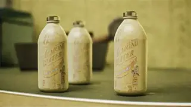
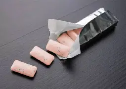
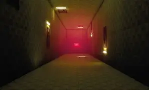
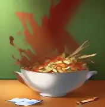
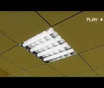

What is a Strange Object?
The Backrooms contain objects. Some are mundane things that fell through alongside wanderers — a torch, a backpack, a bottle of water that is no longer just water. Others appear to have originated here entirely, with no counterpart in the world you came from, and no explanation for how they work or why they exist. These are catalogued as Strange Objects.
The physics governing these objects does not always comply with what you would expect. An object may be heavier than it appears, or weightless. It may change properties depending on who holds it, or what level it is found on. Some objects respond to proximity rather than touch. Others seem inert until a very specific condition is met — one that you may not survive discovering. The rules are inconsistent, and in some cases, appear to be entirely absent.
Each object in this archive has been assigned a safety rating. These are not guarantees. A Safe-rated object can still harm you under the wrong circumstances. A Hostile-rated object has been documented to cause harm reliably and should be avoided or handled with extreme care. Neutral objects sit somewhere between — not obviously dangerous, not reliably helpful. Use your own judgement. This archive has recorded the deaths of people who trusted it too completely.
Objects 1 — 10
// Source: The Backrooms Wiki (Wikidot) · Information reworded for this archive
"Almond Water"

Almond Water is the single most important object a wanderer can have on their person. It appears as a set of coloured metal thermoses filled with a clear liquid — most are dented and worn, as though they have been circulating the Backrooms for a very long time. The exact origin of Almond Water is unknown. It seems to materialise in locations where nobody is watching, appearing without warning in empty rooms or behind objects in occupied ones.
The liquid inside carries a faint almond taste and a subtle vanilla aftertaste, with a slightly oily texture that distinguishes it immediately from ordinary water. Different coloured bottles produce slightly different effects — some promote restful sleep and raise melatonin levels, others sharpen focus, reduce anxiety, or provide a temporary boost to stamina and physical endurance. All variants share a core property: they neutralise harmful effects caused by hostile entities and can slow or even reverse early-stage psychological deterioration caused by prolonged exposure to the Backrooms.
When consumed: Minor illnesses and wounds heal faster. Symptoms inflicted by entities are counteracted. Mental clarity improves noticeably. In early stages, the Wretched Cycle — a process of psychological collapse — can be interrupted.
Warning: Almond Water expires. Expired bottles grow mould inside, turn foul-smelling, and become highly toxic. Consuming expired Almond Water causes weakness, internal bleeding, dementia, and in severe cases, death. Always check the clarity and smell of the liquid before drinking.
"Level Keys"

Level Keys are extraordinarily rare objects, each one corresponding to a specific level of the Backrooms. The majority take the form of heavy cast-iron keys resembling those of the early twentieth century, though each bears a unique design — a runic symbol engraved into the handle that matches the symbol found above that level's door in The Hub. Not every key looks like a conventional key; in some cases they manifest in abstract or entirely unexpected forms.
Their primary function is navigation. A Level Key can unlock doors within its home level and — more crucially — can be used to access that level through doors in other levels entirely. For wanderers who are lost or trying to reach a specific destination, a Level Key is invaluable. They emit a low vibrational frequency that changes depending on how many levels separate you from the key's home level, which means they can also be used as a crude locating device if you have the right equipment.
Physics note: The label on each key is extraordinarily reflective — shining a light at it in a dark area produces a blinding flash effect. This has led to accidental Smiler encounters in numerous documented cases. Handle with care in any unlit environment.
Rarity: Extremely rare. More likely found by chance than by searching. Given their value, they are commonly used as high-end currency among trading groups. Do not advertise that you are carrying one.
"Smiler Repellent"
"Deuclidators"

Also called Warplooms, Deuclidators are compact mechanical devices, roughly a quarter of a metre in length, originally discovered in supply crates on Level 5. They are rectangular and grey, with no screens or ports — only a small input box, two dials, and a single blue button. A thick wire wraps around the handle. Internally, the device is far more complex than it looks: hundreds of loom-like strings capable of vibrating at extreme frequencies, a battery, and an arrangement of cogs fill the casing entirely.
When activated, a Deuclidator warps the space around it — hence the name, a portmanteau of "de-Euclidean." The surrounding area appears to compress, drawing distant walls or features visually closer without actually reducing the space between them. In practice, this generates an intense localised gravitational effect extending up to roughly 50 metres at full charge, and it works on any material regardless of composition.
Physics note: The device operates by vibrating at the resonant frequency of atoms, generating gravitational force through a mechanism that should not be possible given the machine's apparent construction. The input box consumes fuel — rhinestones have proven most efficient, with copper and rubber as alternatives — but has no observable intake mechanism. How the fuel is used is unknown.
Warning: Misuse has led to documented structural collapses and spatial disorientation. The B.N.T.G. now manufactures their own reverse-engineered versions; quality and safety are not guaranteed.
"Candy"

Object 5 is the collective catalogue designation for a range of anomalous sweets, most of which were initially produced and distributed by the B.N.T.G. trading group, though the origin of the raw materials remains entirely unknown. The candies come in a variety of shapes and types, many of which superficially resemble confectionery from the world you came from — until you eat them.
Each type produces a distinct and brief supernatural effect lasting a few hours. Known varieties include pieces that make the user temporarily more persuasive in conversation, chocolates that cause a complete but painless loss of the sense of touch, and others that cause stranger effects — including one variety documented to cause the consumer's hand to temporarily transform into a functional, though harmless, firearm that fires only chocolate rounds. The full catalogue of types has not been established, and new varieties are discovered periodically.
When consumed: Effects depend entirely on the type of candy. Most are temporary and wear off within a few hours without lasting harm. Some types have not been fully tested — consuming unidentified varieties of Object 5 is inadvisable.
Note: Candy is particularly common around Level 11 during certain seasonal events. Be cautious about accepting candy from strangers in the Backrooms, as some varieties are not yet catalogued and their effects are unknown.
"The Mirror"
The Mirror appears, at first, to be a perfectly ordinary wall mirror. It reflects the room accurately. It reflects you accurately. There is nothing immediately wrong about it. This is the danger. The Mirror's anomalous properties do not manifest until a period of observation — how long varies between documented incidents. At a certain point, the reflection begins to deviate from reality in ways that are initially subtle and become progressively less so.
A plaque has been found on some instances of The Mirror, though its text and its relationship to the object's behaviour have not been decoded. What is known is that prolonged exposure to The Mirror causes serious psychological harm. Wanderers who have spent extended time near it report dissociation, a growing inability to distinguish their reflection from themselves, and in severe cases, a compulsion to remain in front of it that they describe as not entirely voluntary.
Physics note: The reflection does not obey conventional optics after the anomalous properties activate. Light still reaches the surface and returns — but what it returns is not what was sent.
Warning: Do not linger near any mirror that appears out of place. If you notice your reflection moving independently, leave the area immediately and do not look back.
"Memory Jar"

Memory Jars are glass containers that hold memories — not records of memories, but the memories themselves, extracted and stored as a luminous substance inside the jar. A filled jar takes on a faint pink glow. Empty jars are colourless and unremarkable. They are found most commonly within a region known as The Memory, though wanderers have occasionally come across them in other levels, though in far smaller numbers.
The memories inside belong to someone — sometimes a known wanderer, sometimes an entity, sometimes a person whose identity cannot be determined. Opening a filled jar and experiencing the memory inside is possible, though the mechanism by which this occurs is not fully understood. Memories belonging to notable or well-known individuals are highly valued in trading. Memory Jar collecting has become a documented subculture within certain Backrooms communities.
Practical use: Finding a Memory Jar in an unfamiliar area can be genuinely useful — the memory inside may contain information about nearby threats, exits, or hazards the previous holder encountered. Treat any found Memory Jar as potentially valuable intelligence before treating it as currency.
Note: This entry is currently undergoing rewrite. Some details may be updated or amended.
"Lamps"

Object 8 Lamps are devices developed specifically for use in the Backrooms by a group known as Backrooms Robotics. They are not to be confused with the ordinary lamps that appear as scenery throughout various levels. These are purpose-built objects, distributed in bulk to the M.E.G. for deployment across the lower levels, and they behave in ways that no ordinary lamp does.
Lamps of this type move. They were built with functional legs, and something about the Backrooms — some ambient property of the environment — activated this capability in a way that was not fully intended by their designers. Beyond locomotion, they appear to have a rudimentary awareness of their surroundings. They respond to events in ways that suggest perception, though what they perceive and how is not documented with certainty.
Physics note: The Backrooms appear to have granted these devices capabilities beyond their engineering. This is not the first documented case of the environment fundamentally altering the properties of an object. The mechanism behind this is unknown.
When used: Provides reliable light in dark areas. Does not appear hostile. Some wanderers report that the Lamps seem to follow them or position themselves helpfully, though this behaviour is inconsistent and not guaranteed.
"Dumb Gum"
Dumb Gum is a chewing gum found across various levels of the Backrooms. It appears unremarkable at first — the packaging, colour, and texture are consistent with ordinary chewing gum from the Frontrooms. The effects, however, are not. Chewing Dumb Gum temporarily suppresses the user's capacity for verbal and written communication. The effect is not painful and does not impair thought — ideas and intentions form normally — but the ability to express them through language, spoken or written, is blocked entirely for the duration.
The length of the effect varies between individuals and between pieces of gum. Some wanderers have found this property accidentally useful — particularly in situations involving entities or phenomena that respond to sound or language. Others have found it catastrophically inconvenient.
When consumed: Temporary inability to speak or write. Thought and motor function are unaffected. Effect duration is unpredictable — do not chew Dumb Gum before a situation that requires communication.
Physics note: The mechanism by which the gum selectively suppresses language centres without impairing other cognitive function is not understood. It leaves no trace after the effect fades.
"Scarecrows"
Scarecrows appear as traditional agricultural scarecrows — a humanoid frame of stuffed clothing, a sack or mask for a face, propped upright. They are found in various levels, usually in isolation. They do not move while being observed. This is the most important thing to understand about Scarecrows: their behaviour is entirely contingent on whether you are watching them. The moment direct observation ends, they move. They do not appear to have a destination — they appear to be moving toward you.
Wanderers who have survived encounters with Scarecrows consistently report the same sequence: noticing the object, looking away or blinking, and finding it closer than before. What happens if a Scarecrow reaches a wanderer is not well documented, as few of those encounters have produced survivors who were able to file a coherent report.
Physics note: Scarecrows appear to exist in a state that makes movement possible only when unobserved — a property that violates all known physical laws. Whether this is a property of the objects themselves or of some entity using the scarecrow as a form, it is not yet determined.
Warning: Do not look away from a Scarecrow. Do not blink if you can avoid it. Back away slowly while maintaining eye contact. If you lose sight of it for any reason, leave the level immediately by any available means.